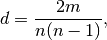

density¶
- density(G)[source]¶
Return the density of a graph.
The density for undirected graphs is

and for directed graphs is

where
 is the number of nodes and is the number of edges in
is the number of nodes and is the number of edges in  .
.Notes
The density is 0 for a graph without edges and 1 for a complete graph. The density of multigraphs can be higher than 1.
Self loops are counted in the total number of edges so graphs with self loops can have density higher than 1.